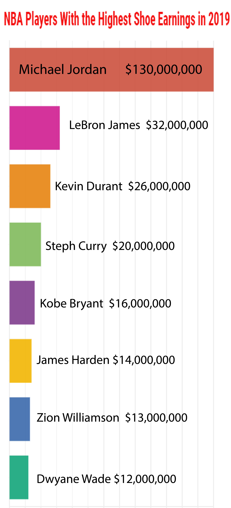
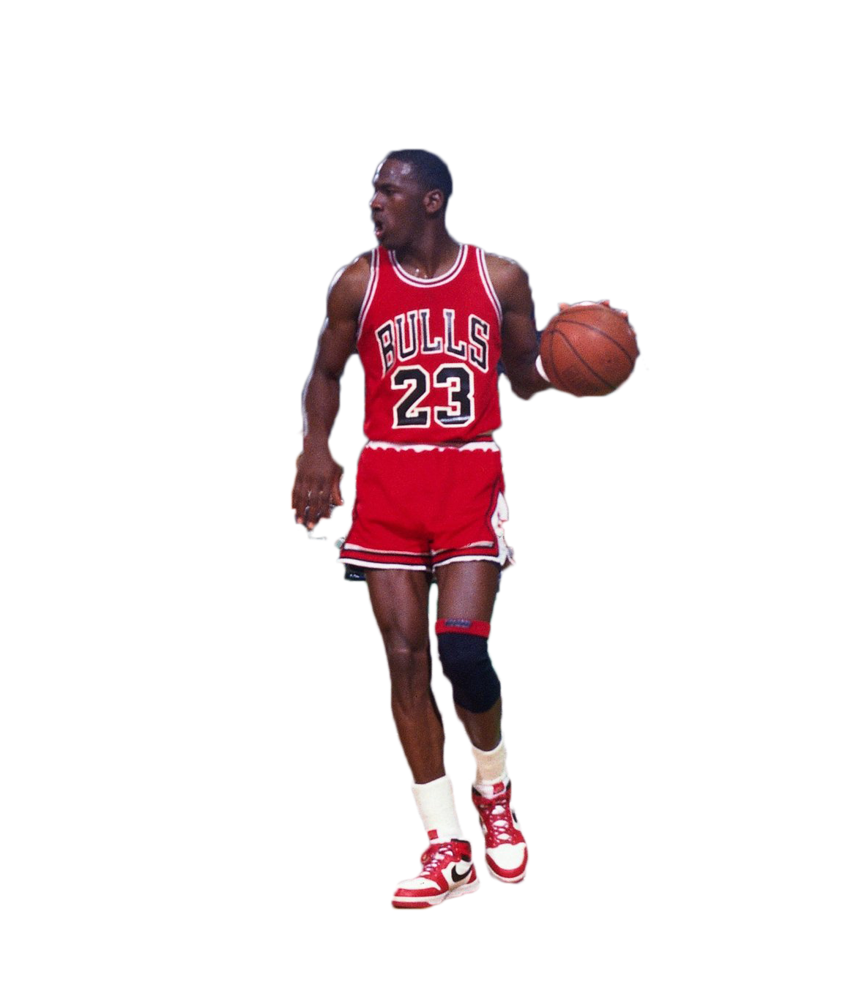
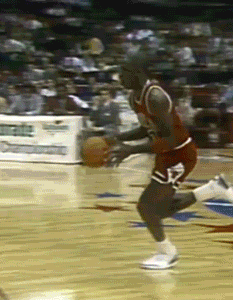
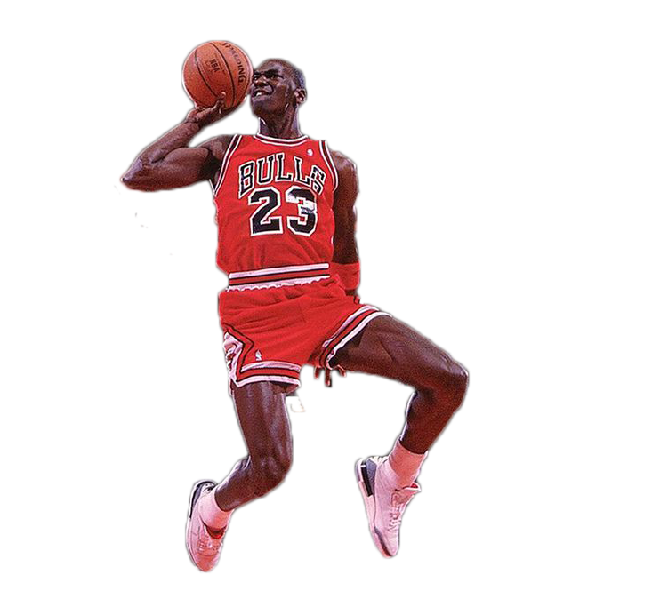
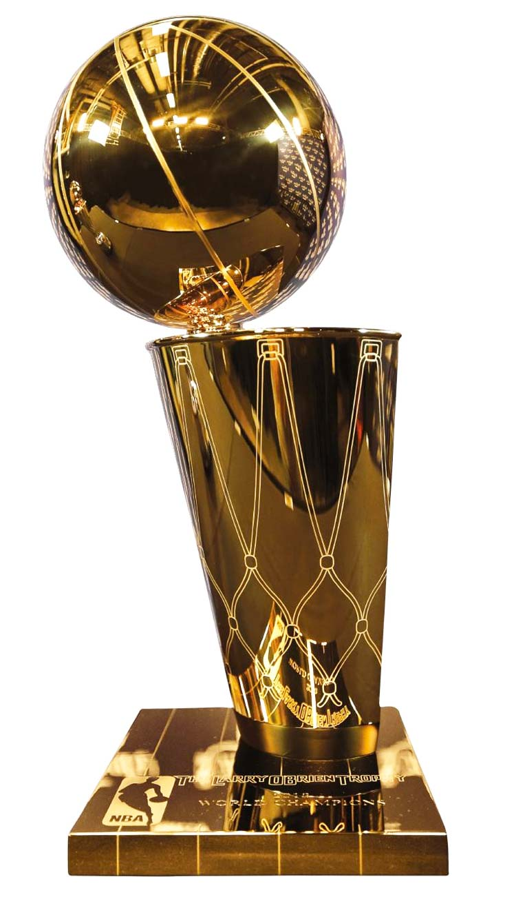
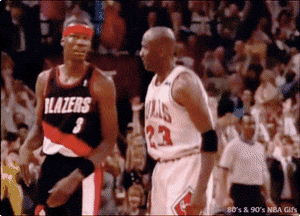
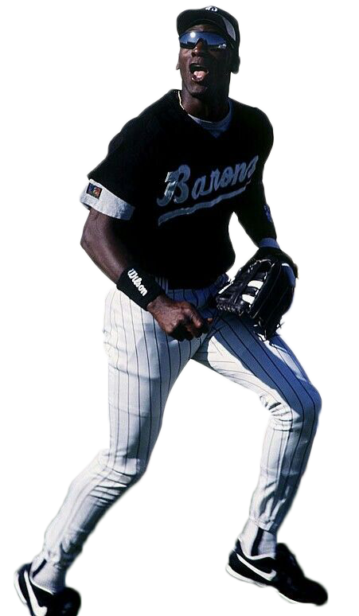
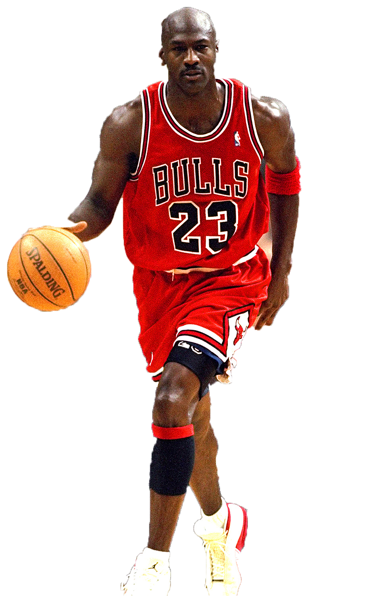
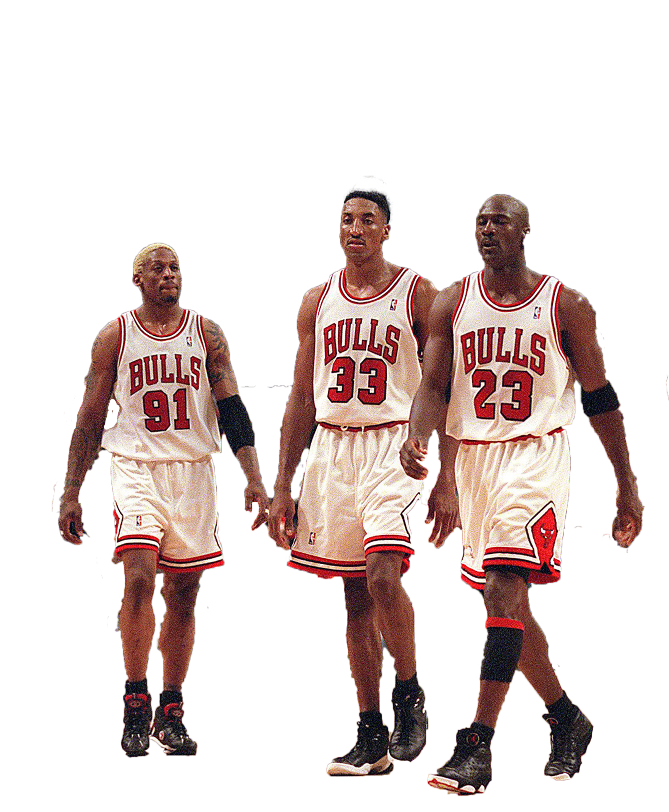

Michael Jordan is drafted third overall by the Chicago Bulls
After three years and one NCAA title at North Carolina. Jordan came out of college as one of the most hyped prospects in NBA history.
NOVEMBER 17, 1984
MJs Signature Shoe Makes it's Debut
Michael Jordans vaunted Air Jordan brand was worn by Mike for the first time in a game on this day. It is still the most successful basketball shoe brand on the planet.

MAY 16, 1985
Michael Jordan Wins the NBA Rookie of the Year Award
In just his first season in the NBA, his airness made the all star team and led the Bulls to the playoffs for the first time in nearly a decade.
Jordan averaged over 28 points, 6 rebounds, and 5 assists per game and was one of a select few players to make an All-NBA team as a rookie. While he wasn't able to find success in the playoffs, (the Bulls lost to a tough Milwaukee Bucks team in the first round) it was clear to all that Jordan was the future of the National Basketball Association

APRIL 20, 1986
Jordan Scores 63 in a Playoff Game
In game 2 of Chicagos first round series versus the Boston Celtics, MJ broke the NBA record for points in a playoff game which still stands today. Although Chicago went on to lose the game in overtime, it remains one of Jordans most iconic moments.

FEBRUARY 6, 1988
MJ Wins the 1988 Dunk Contest
In what is to this day known as the greatest dunk contest of all time, Michael Jordan defeated fellow high flyer Dominique Wilkins with a spectacular dunk from the free throw line that earned a perfect score from the judges.

JUNE 1, 1988
Michael Jordan Wins MVP and Defensive Player of the Year
Jordan made history on this date by becoming the first and only guard in NBA history to win both the MVP and the Defensive Player of the Year award in the same season. This cemented him as the past player in the league on both ends of the court.

JUNE 12, 1991
Jordan and the Chicago Bulls Capture Their First NBA Title
A game five victory over the Los Angeles Lakers on this date won MJ his first of many NBA titles. He also won his first finals MVP, an award he would earn in every NBA finals he appeared in.

JUNE 3, 1992
The Infamous Shrug Game
Jordan was not happy with Clyde Drexler being compared to him, and when he met Drexlers Portland Trail Blazers in the 1992 NBA finals he made sure the comparisons would stop. In the first half of game one, Jordan made an NBA playoff record six three pointers in a half, capping off the sixth one with a cocky shrug of disbelief.

October 6, 1993
Jordan Abrubtly Retires
After winning his third successive title in 1993 and spurred on by the death of his father, Michael felt he had nothing left to prove in the NBA. He retired to try his luck at baseball with the minor league Birmingham Barons.

March 18, 1995
Jordan Announces His Return to Basketball
On this date in 1995 Jordan announces his return to basketball with a two word press conference, 'I'm Back'. It marks the beginning of another stretch of Jordan dominance.

April 21, 1996
The Bulls Set the NBA Wins Record
With a victory over the Indiana Pacers, Jordan and the Chicago Bulls set an NBA record with 72 wins in the regular season to only 10 losses. They would go on to win the 1996 NBA finals, Jordans 4th.
June 14, 1998
The Last Shot
With 5 seconds left in Game 6 of the 1998 NBA Finals, Jordan hit the game winner in spectacular fashion, winning his sixth NBA championship on what would be the last shot of his Chicago Bulls career. Later that summer he would announce his retirement from professional basketball. And although he would return later with the Washington Wizards, he never again played for Chicago.